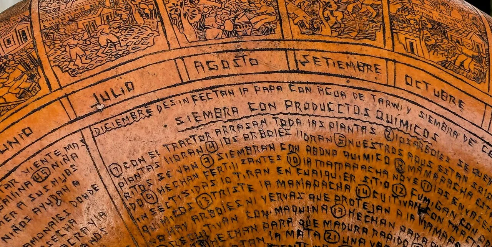

En una de las fotografías se lee un encabezado sobre el matrimonio; en otra, los meses separan actividades. Las imágenes atribuidas a Irma Poma no presentan una calabaza simplemente cubierta de adornos. Hay escenas, divisiones y escritura. El soporte obliga a una decisión narrativa: una superficie curva nunca entrega todo su contenido desde el mismo punto de vista.
El Ministerio de Cultura del Perú describió en 2014 el trabajo de Irma Luz Poma Canchumani como una representación de vivencias del Valle del Mantaro mediante el buril. La nota recogía además su intención de trabajar un mate sobre el Qhapaq Ñan. Conviene conservar el tiempo verbal: era un proyecto anunciado en esa fuente, no una obra cuya finalización hayamos comprobado. [1]
El detalle del matrimonio permite observar una relación entre figuras y texto. Los cuerpos ocupan una franja y la escritura desarrolla información debajo. Esa separación evita que ambos recursos tengan que explicarlo todo por sí mismos. Una escena puede hacer visible una acción; las palabras pueden nombrarla, situarla o añadir una secuencia que la imagen no contiene del mismo modo. [2]


En el otro registro, la distribución por meses organiza una lectura temporal. La cuadrícula no cubre una hoja plana: acompaña la curvatura del mate y cambia con ella. El dibujo necesita adaptarse a un límite material que no fue fabricado como un rectángulo regular. Las pequeñas variaciones del soporte forman parte del problema de composición. [3]
Para seguir una historia así hay que girar el objeto o cambiar de posición. La mirada dispone siempre de una parte y conserva en la memoria la anterior. El lector participa físicamente en el orden de acceso. Un recorrido circular puede admitir varios comienzos, pero eso no vuelve indiferente la organización: títulos, franjas y cambios de densidad ayudan a encontrar una orientación.
El buril añade una condición irreversible al trazo. Retirar material no funciona igual que mover una línea en un archivo digital. El dibujo debe responder a la resistencia y a la curvatura del soporte, aunque no conozcamos aquí la secuencia de trabajo de la artista. Esa relación permite valorar la precisión sin convertir la aparente finura en el único criterio de calidad.
La cantidad de detalles puede impresionar y, al mismo tiempo, dificultar una reproducción editorial. Si el objeto entero se reduce demasiado, las inscripciones dejan de ser legibles. Si solo se publica un acercamiento, desaparecen escala y forma general. Una documentación más completa debería reunir ambas vistas. Estos dos detalles sirven para examinar decisiones narrativas; no reemplazan un registro integral de las obras.


También la palabra calendario necesita cuidado. Ordenar actividades por meses puede conservar un conocimiento y producir una representación selectiva. No demuestra que todas las familias de un territorio trabajen de manera idéntica ni que una práctica permanezca inalterada. Una obra de autor tiene derecho a organizar su relato sin tener que representar estadísticamente una región entera.
El cruce entre imagen, texto y volumen ofrece una lección para quien organiza información. Un sistema de lectura puede partir de una materia irregular y pedir una interacción sencilla: mirar, girar, comparar. La complejidad está en las relaciones que abre, no en obligar a aprender una interfaz llena de instrucciones.
En los mates de Poma, la superficie no desaparece detrás del relato. Permanece como condición de lo que puede mostrarse y de cómo se recorre. La consecuencia para el diseño es precisa: antes de escoger una plantilla, conviene preguntar qué forma de atención pide el contenido. A veces una historia necesita una página; otras, un objeto que todavía guarda algo fuera de la vista.
Fuentes.
- Ministerio de Cultura del Perú — Los mates burilados de Irma Poma, 2014
- Archivo fotográfico de H.dav.are — detalle de obra atribuido a Irma Poma: matrimonio, 26.04.2026
- Archivo fotográfico de H.dav.are — detalle de obra atribuido a Irma Poma: actividades por meses, 26.04.2026
Las atribuciones de las dos imágenes siguen sus fichas fotográficas; no se examinó la pieza física ni se entrevistó a la artista. El texto no transcribe ni interpreta como testimonio propio las inscripciones completas.
Fuentes consultadas el 15.11.2026. Análisis e interpretación: RUMMOR. Edición privada para revisión.